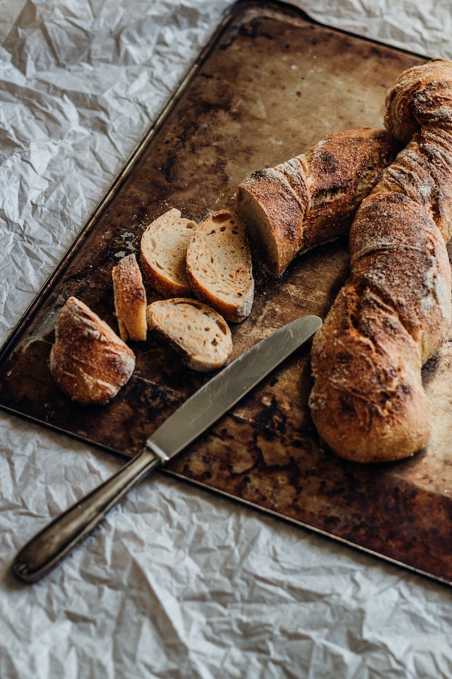

Pão Caseiro

Imagem ilustrativa
Ingredientes
2 Xícaras (chá) de farinha de trigo
2 Colher (sopa) de açúcar
2 Colheres (chá) de fermento biológico
1/2 colher (chá) de sal
Modo de preparo
asdgasd
asdgasd
asdgasd
asdgasd
asdgasd
asdgasd
Informações adicionais
Especial para café da manhã ou café da tarde